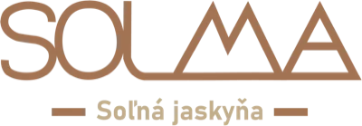
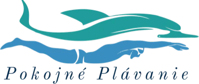
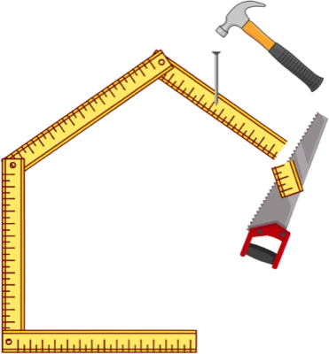
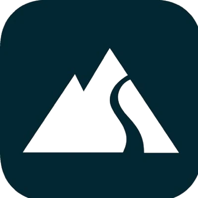

01
Research
Before I so much as open a document to write in, I spend dozens of hours immersed in stories, reviews and conversations, getting to know your target customer. Not one word is written out of my head — or an AI’s.





Forget the endless guessing, the trial and error, and the agonising over why it still isn’t working.
Instead, grow your business with proven client-acquisition funnels, a process that has already been tested, and a partner who wants to dominate alongside you!
Dear business owner,
exactly 5 years ago, still at secondary school, I was choosing a company for my work placement.
I was studying at an electrical engineering school, but I was always drawn more to sales and marketing.
I picked one company I will not name, where I worked as an intern.
I had no experience and no education in marketing. After all, I was studying electrical engineering…
They had me making designs and copy in Canva for a client’s posts.
The only information I had about that client was what industry they were in and what they sold.
Nothing more…
Mass-produced marketing creatives with no strategy, no emotion and no idea who they were actually writing to…
That was the moment I found the gap in the market.
I understood how the big marketing agencies do it, and I saw room to be better.
So in my second year of secondary school I started building my own company!
Today I stand at the head of Benzo Marketing.
Our job is to help brands with big ambitions discover what will move them forward, and to use it to the full through marketing that genuinely dominates.
Benzo Marketing is Achilles, and you are the king of the Greeks.
Your competition is Troy.
And we all know how Troy ended…
My job is to fight at your side for your business!
Wishing you strength,
Peter Michael Beník
Peter Michael Beník
Benzo Marketing
Ordinary agencies
BENZO Marketing
The contract and the monthly invoices come first
Our goal is to take your market and beat your competition
Outside office hours they could not care less
Communication 24/7
Everyone gets the same template, sorted by package
Every project is built to measure for your goal
They tell you fairy tales with no numbers behind them
I show you the numbers, then we agree what comes next
To them you are one more row in a spreadsheet
A partnership in which we take your market together
They hand you a package and leave you wondering why nothing works
Every part of the funnel fits perfectly into the next
Until you pay thousands a month, you are handed juniors and interns
A team of three workaholics hungry for success
You pay the same no matter what you get
We measure our success by your results
01
Before I so much as open a document to write in, I spend dozens of hours immersed in stories, reviews and conversations, getting to know your target customer. Not one word is written out of my head — or an AI’s.
02
Working from the awareness and sophistication of your market, we build funnels that catch your audience where they spend the most time. We speak to them in their own language and stir the emotions that make them take the action we want.
03
We have no intention of launching a campaign and then going quiet, the way you are used to… The first project is only the start of our road to dominating your market. You do not have to be the one bringing us ideas — it is the other way round. We are the ones who come to you with options for the next move…
We do not work with everyone who crosses our path.
That is why every one of our clients gets premium care.
Communication 24/7.
There is also a process before and after the project, which I can only tell you more about on a call together.
The first step is an introductory call where we talk about you, your business and your situation. If we understand each other, we arrange a second call where I present a strategy built to measure for you.
We say yes or no, and then we can start the project.
For 2 weeks I work on research alone, so that I understand how the psychology of your industry works.
Then we walk it phase by phase, until everything is ready to launch.
After launch comes the testing phase, where we test and optimise the results from the campaigns and the pages for the greatest profit…
It depends on the project and the goal. We do not run on packages and templates the way other agencies do.
Every phase is made to measure and built strategically for the greatest possible impact on your business.
Every project is different, so I do not settle the price online in advance.
We always talk it through on the call itself, where you see exactly what you get and for how much.
One thing is clear, though: the minimum entry investment starts at €2,000.
If that is not within your means right now, please do not fill in the form.
If you have the ambition to grow, you can work through weekends too, and you are ready for a volume of enquiries you are not used to…
You click the button in this box and your life stays exactly as it is. No strategy, no plan, just empty encouragement from an AI that you have already heard a million times.
You click the button in this box, fill in the form, and meet a team that hands you the choice of who you work with and who you do not. A team you can count on to answer you at 8pm on a Saturday. A team that wants to dominate in every industry it touches. Do you see yourself in that?
Do not leave just yet
While you weigh it up, your customers are listening to someone else. We will look at your situation with no obligation.